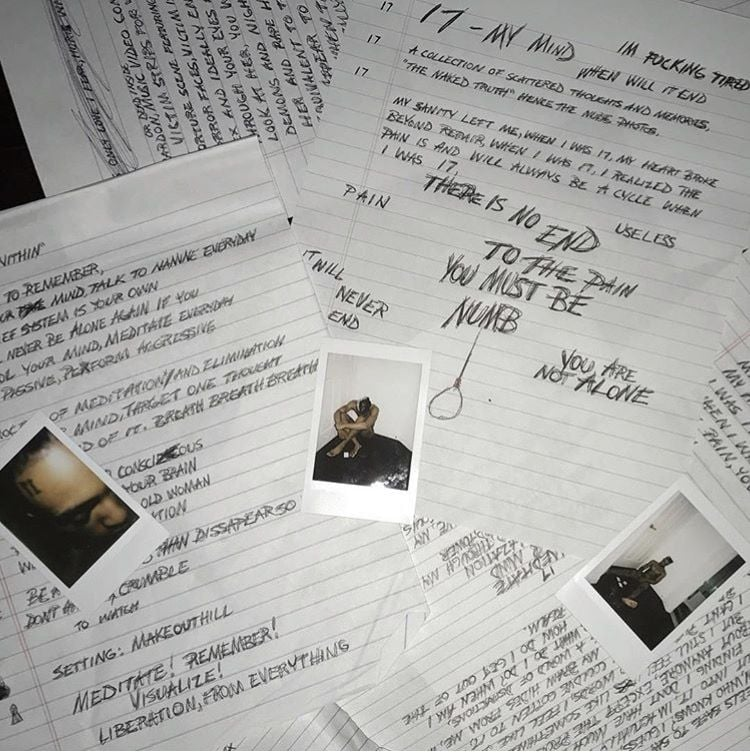
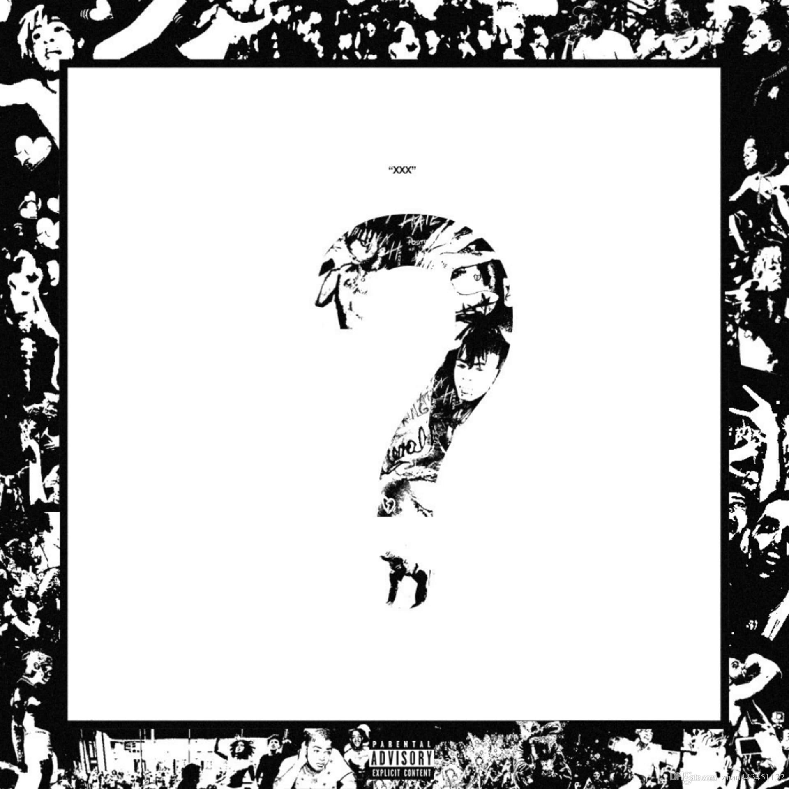
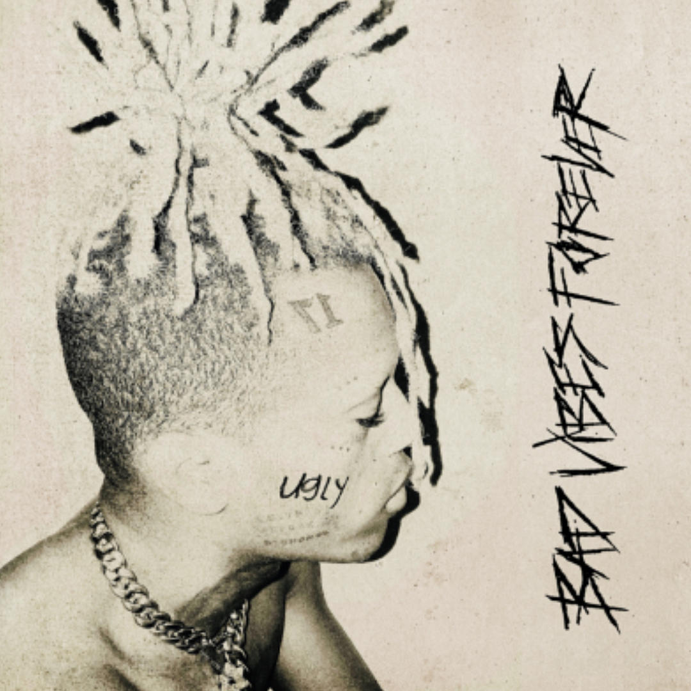

DISCOGRAPHY




Jahseh Dwayne Ricardo Onfroy (January 23, 1998 - June 18, 2018), known professionally as XXXTentacion and commonly referred to as simply X, was an American rapper, singer, and songwriter. Though a controversial figure due to his widely publicized legal troubles, XXXTentacion gained a cult following among his young fanbase during his short career with his depression- and alienation-themed music. Critics and fans often credit him for his musical versatility, with his music exploring emo, drill, trap, lo-fi, indie rock, nu metal, hip hop, R&B, and punk rock. He is considered to be a leading figure in the emo rap and SoundCloud rap genres which garnered mainstream attention during the mid-to-late 2010s.
Born in Plantation, Florida, XXXTentacion spent most of his childhood in Lauderhill. He began writing music after being released from a juvenile detention center and soon started his music career on SoundCloud in 2013, employing styles and techniques that were unconventional in rap music such as distortion and heavy guitar-backed instrumentals, drawing inspiration from third-wave emo and grunge. In 2014, he formed the underground collective Members Only and alongside other members of the collective soon became a popular figure in SoundCloud rap, a trap music scene that takes elements of lo-fi music and harsh 808s. XXXTentacion gained mainstream attention with the single "Look at Me". His debut album 17 (2017) is certified double-platinum in the US and reached number two on the Billboard 200. His second album ? (2018) debuted at number one on the Billboard 200 and is certified quadruple-platinum in the US. Its lead single, "Sad!", posthumously reached number one on the Billboard Hot 100, and had amassed more than 1.3 billion views on YouTube and 1.7 billion streams on Spotify by November 2021, as well as being certified Diamond by the RIAA in August 2021. XXXTentacion had faced a variety of legal issues throughout his lifetime, most notably the controversy that arose from the battery charges which were levied against him in 2016. XXXTentacion's history of legal issues and alleged violence has been described by some as defining his legacy, while others have criticized the media's portrayal of him, arguing that his perceived improvements in character later in life have made his legacy into a tale of the power of second chances and redemption. On June 18, 2018, XXXTentacion, age 20, was murdered when he was shot near a motorcycle dealership in Deerfield Beach, Florida.